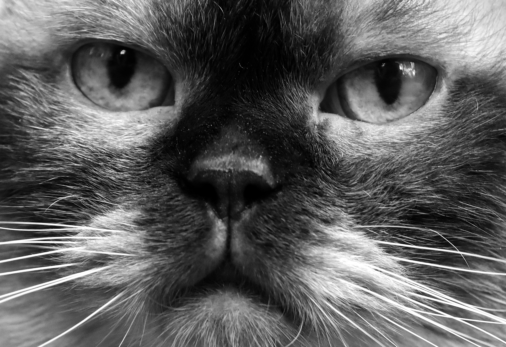

Durham House of Pets was founded in Durham, New Hampshire in 2009 by John and Anne Smith and began selling pet supplies such as dog leashes and cat food but have grown to sell pets themselves. John and Anne have realized the selling potential of pets in Durham to college students and have been selling dogs, cats, and fish since 2011. Although they started with a simple business plan, they have grown and continue to do so as they plan to start selling hamsters and rabbits in the fall of 2017.
DHP offers the best pets on the seacoast at the best prices. We offer price match guarantee and have been selling pets and their supplies for the past 8 years. We have established relationships with breeders and organizations in the surrounding areas and also include all necessary vaccinations for our cats and dogs. One student even said, "I loved the service at DHP so much when I was a freshman that I've been buying new pets each year after UNH's Homecoming weekends!" - Jen H. Class of 2017